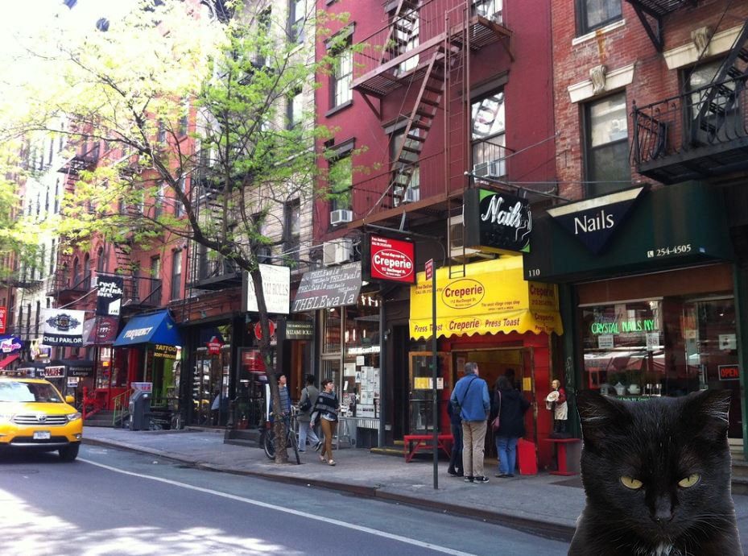

Vampire in NYC
Environment Sounds

My audio project is meant to show all the sounds my character hears throughout his day.
My character is a vampire, so he hears very intensely. The heartbeat of others around him and his cat’s meows from the shadows as she watches over him.
The hardest part was deciding what sounds to put together. I solved this problem by closing my eyes and imagining myself in my characters day to day. I feel as if my sound is perfect and really paints the image I was going for.